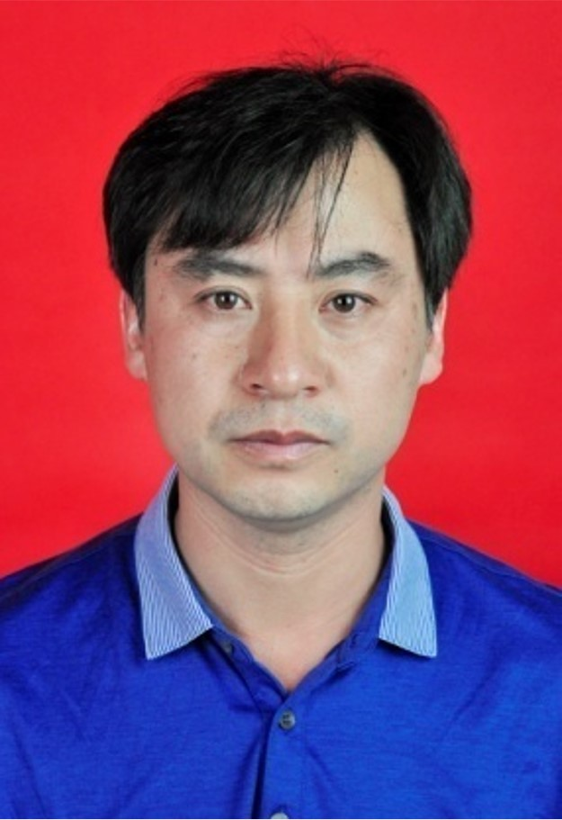
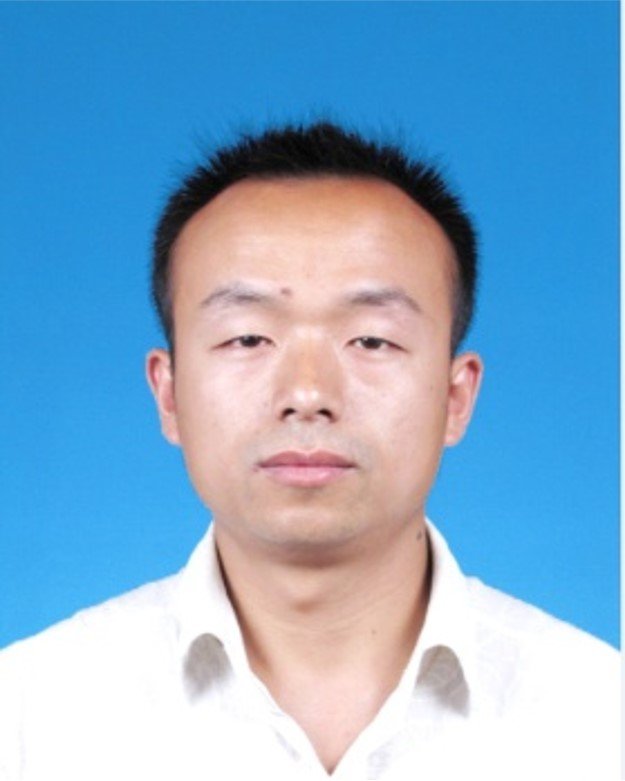
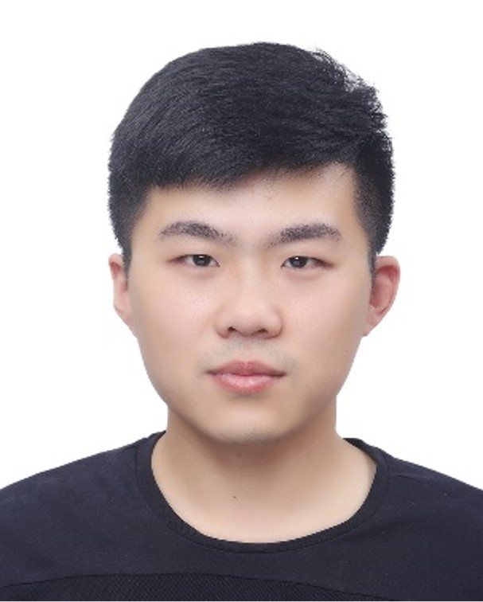
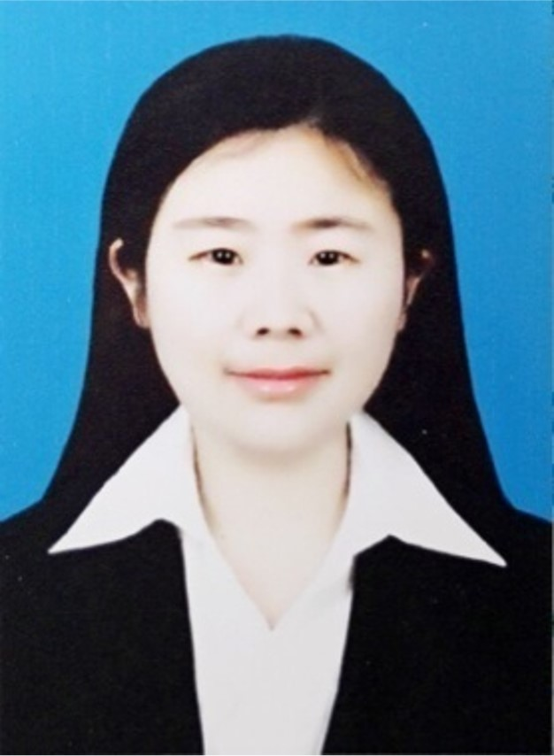
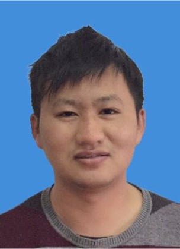
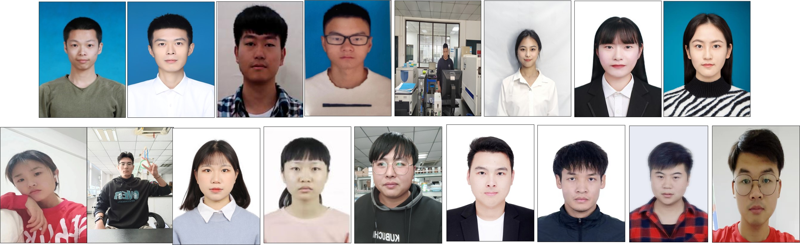

武立权 博士，博导，院长/教授，皖江学者，省学术和技术带头人、安徽省水稻体系岗位专家，省稻作品种审定委员，享受省政府特殊津贴。
主要研究方向为水稻逆境生理与分子机制、水稻优质丰产栽培理论与精确技术。先后主持国家自然科学基金、国家（省）重点研发计划等项目15余项，发表论文30余篇，SCI论文15篇，制定地方标准10项、副主编国家规划教材1部、参编3部。

何海兵 博士，硕导，副教授，校级教学名师，省级“三区”人才。
主要研究方向为水稻抗逆丰产栽培生理生态及水稻轻简化栽培技术研究。
主持国家（省）自然科学基金、国家重点研发计划及其他省级项目6项，
第一作者或通讯作者发表学术论文20余篇，其中SCI论文8篇，参与制定地方标准5项。

张强强 博士，硕导，副教授。
主要研究方向为水稻高光效的光合生理机制。
主持国家自然科学基金、国家重点研发计划课题任务和中国博士后科学基金项目3项。发表SCI论文6篇。

尤翠翠 博士，硕导，讲师。
主要研究方向为水稻籽粒灌浆启动的生理调控机制。
主持国家（省）自然科学基金、国家重点研发计划及其他省级项目6项，发表学术论文7余篇，SCI论文3篇，参与制定地方标准3项。

柯健 博士，硕导，讲师。
主要研究方向为水稻优质丰产新型肥料调控效应及机理研究。
主持国家（省）自然科学基金、国家重点研发计划及其他省级项目5项，发表SCI高水平论文3篇。
